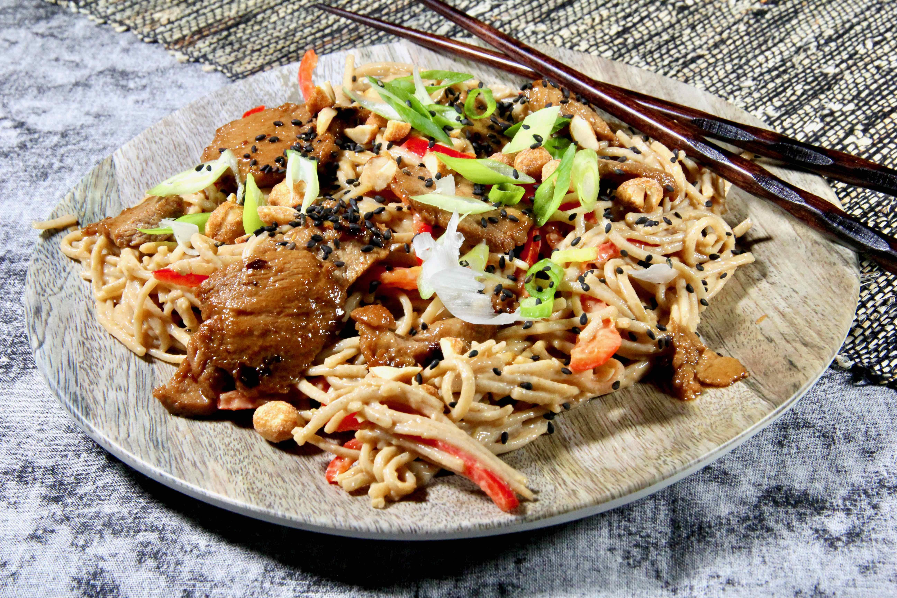

Description:
Tender pork tenderloin is the perfect partner to this tasty Asian-flavored buckwheat cold noodle salad.
Ingredients
- 6 ounces dried soba noodles
- 3 tablespoons creamy
- 3 tablespoons warm water
- 2 tablespoons sesame oil, divided
- 2 tablespoons hoisin sauce
- 2 tablespoons Sriracha sauce, or more to taste
- 2 teaspoons soy sauce
- 1 medium lime, zested and juiced
- 1 teasapoon crushed garlic
- 1 teaspoon minced fresh ginger root
- 1 snall red bell pepper, thinly sliced
- 3 tablesponns teriyaki sauce
- 1 teasapoon rice vinegar
- 1/2 teaspoon red pepper flakes
- 6 ounces pork tenderloin
- 1 tablespoon chopped peanuts
- 1 tablespoon sliced green onion
- 1 teaspoon sesame seeds
Steps
-
Bring a large pot of water to a boil, add soba noodles, and cook according to package
directions, about 4 minutes. Drain noodles, rinse under cold water, and set aside to
cool.
- Whisk peanut butter, water, 1 tablespoon sesame oil, hoisin sauce, Sriracha, soy
sauce, lime zest and juice, garlic, and ginger together in a small bowl for the dressing.
Pour dressing over noodles. Add red bell pepper and toss to combine. Refrigerate
untill well chilled, at least 1 hour.
- Stir teriyaki sauce, rice vinegar, and red pepper flakes together in a bowl until well
combined. Cut pork tenderloin into very thin slices, about 1/8 inch thick, then cut
each slice in half. Add pork to marnade, cover bowl, and chill in the refrigerator for 30
minutes or longer.
- Remove pork from refrigerator. Heat a skillet over medium-high heat, and heat the
remaining 1 tablespoon sesame oil until hot. Add pork, separating pieces to cover the
skillet's bottom. Cook the pork, occasionally stirring, until cooked through, 2 to 3
minutes. Your time will depend on how thinly the pork is cut, but try not to overcook
to retain tenderness.
- Remove noodles from the refrigerator and give then a good stur. Divide the noodles
among 4 plates or bowls. Evenly ditribute the pork on top of the noodles and garnish
with peanuts, green onions and sesame seeds before serving.
Home